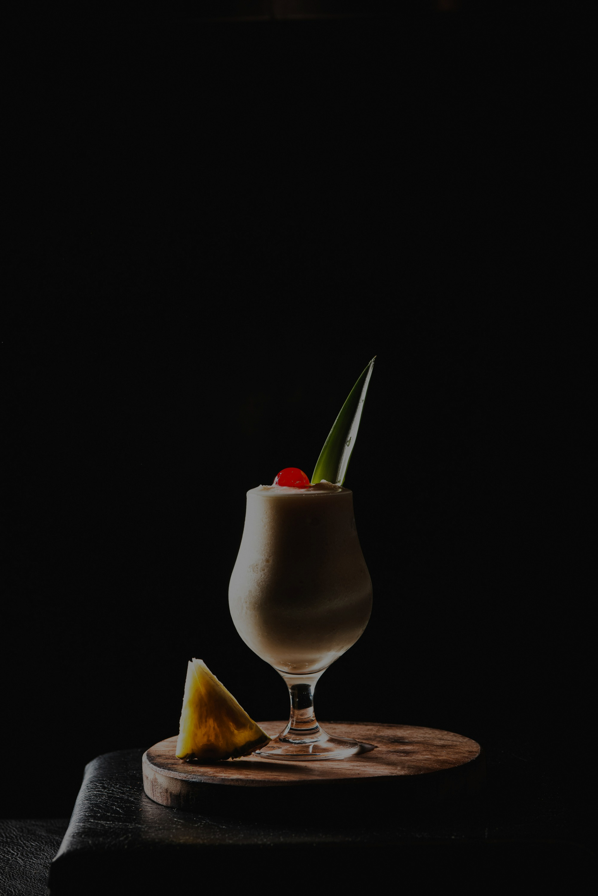

Piña colada
Existen varias versiones sobre la autoría de este dulce y refrescante cóctel tan apegado al verano y al ambiente marítimo, pero nosotros vamos a apostar por la que quedó registrada en 1954 cuando el barman del Beachcomber Bar del Hotel Caribe Hilton de San Juán de Puerto Rico, Ramón «Monchito» Marrero, recibió el encargo de su jefe de confeccionar un cóctel que recogiera la esencia del lugar y fuera el estandarte del hotel. Para ello, se le ocurrió mezclar ron blanco, crema de coco y jugo de piña.
la piña colada ofrece una combinación ideal: frescura, dulzura y un toque alcohólico que relaja y transporta. La mezcla de frutas tropicales con ron crea una sensación de escape, como si uno estuviera de vacaciones en una playa del Caribe en lugar de en el centro de España.
Además, su textura cremosa y suave la hace perfecta para tomar con calma durante una tarde de terraza o una noche de rooftop. No es una bebida que se tome rápido; se disfruta sorbo a sorbo, en un vaso alto, con una sombrilla o una rodaja de piña decorativa. Es, en esencia, una experiencia sensorial que combina el placer del gusto con el descanso visual.
La Piña Colada es un cóctel dulce y refrescante que combina los sabores tropicales del coco y la piña con el toque inconfundible del ron. Su textura cremosa, su aroma frutal y su característico color pálido la han convertido en uno de los cócteles más populares del mundo, especialmente en épocas de calor. Aunque su origen se corresponde con Puerto Rico, hoy en día es muy apreciada en España y en cualquier rincón donde se busque un trago suave y delicioso.